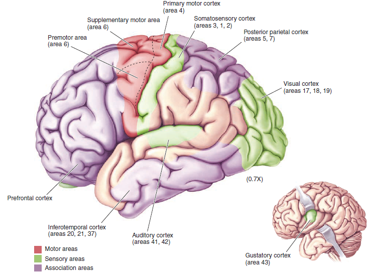
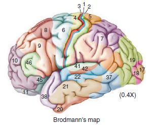

[TOP] Project Summary
This is a project with title HCI via Brainwave Control for MSc(CompSc) Dissertaion in HKU, supervised by Dr. Loretta Y.K. Choi.
Brainwave control is a kind of training, detection and recognition process of signals generated from electroencephalographic (EEG) activity. Brain Computer Interface (BCI) contributes to passing certain instructions or actions to various devices like computers, assistive appliances and so on, free of inconvenient physical operations. It makes it possible for handicapped people to live a more convenient life.
This project aims at proposing a brain-computer interaction (BCI) communication system through electroencephalography (EEG) data retrieved from wireless Emotiv neuroheadsets. The thesis mainly focuses on numerous factors and behaviors that trigger neural signal changes, factors classification and signals distinction. Through exploration of the minimum number of signals trained sufficient for basic communication like identifying letters, and its accuracy, the aim is to realize a special brainwave-control communication system.
The Emotiv neuroheadsets and well-designed user interfaces for different scenarios and usages will work as the input and output media. After processing the input EEG signals, the corresponding information will be generated and output. Specific techniques and algorithms will be applied to deal with signal noises and the optimal input method will be chosen to improve the accuracy and efficiency of communication.
Device Contact Quality
Insight: 0) Using USB is better connected than using Bluetooth. 1) Hair matters, remove hair from sensors as much as possible. 2) Emotiv Insight fluid does not matter much 3) To fit correct sensors positions, among which the two references guide the others. When the reference sensor behind ear is detected well (close to muscle and bone), others can be detected much better. 4) "Pz" sensor(the one on the top of head) is the one hardest to be detected well. Sensors touching fully with scalp leads to good connection. 5) Please charge enough. Power duration: Only 4 hrs using Bluetooth(r) SMART mode. Charging can activate the device. 6) the relatively longer correct wearing correctly the better connection. EPOC+: 0) Till now, tests only reached 78% contact quality (BAD, not enough for app) 1) Hair matters. But it is not easy to remove hair for all 16 sensors. 2) Always hydrate the sensors FULLY saturated with saline solution. Or try hydrating hair directly where sensors are. 3)Put the two references on correct positions. (mastoid bone) 4) Sensors should touch firmly, entirely with scalp, especially sensors NEAR ears. 5) Charge first!!! (4-5 hours) 6) Close to the USB dongle as near as possible, which improve contact signal. Addition: 1) do not wear for long, it is aching. 2) pressing can trigger detection. 3) always charge before using it again, cuz it always losing power as time passes.
Emotiv SDK - Community
#(FREE) community https://github.com/Emotiv/community-sdk Emotiv SDK Community Edition 3.4.0 Functions: 1)Facial Expressions; [Hard to train, Bad] 2)Mental Commands; [Hard to train mixed commands] 3) 9 Axis Inertial Sensors; [Good] 4)FFT (Frequency Bands) Emotiv SDK Community Edition 3.4.0 Platform: Win10 64bit Program: run on Visual Studio 2017 (samples’ platform VS13) / MATLAB, Unity,... API doc: http://emotiv.github.io/community-sdk/ Language: C++(mainly) Reference: https://emotiv.zendesk.com/hc/en-us *Most samples are of connection detection, having few effect on application development. *Most samples are of command window projects, among which some have UIs.
Emotiv SDK - Premium
#Premium - only for commercial application (need to purchase for license) Functions: 1)Performance Metrics; 2)Raw EEG
Course Study #1
Neuroscience
Cerebral Cortex and Cerebral Lobes


*Reference: Mark F. Bear et al. Neuroscience - Exploring the Brain[J], Chapter 7, Third EditionElectroencephalogram(EEG) and Brain Rhythms
*Reference: https://www.biopac.com/curriculum/h10-hemispheric-eeg/Mark F. Bear et al. Neuroscience - Exploring the Brain[J], Chapter 19, Third Edition